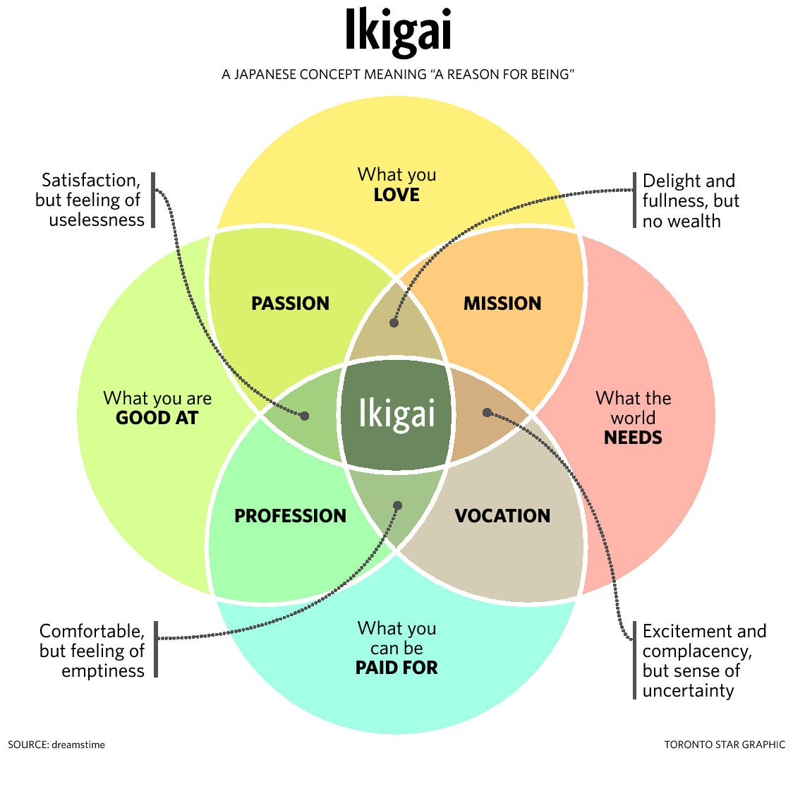

My name is Seng Kin Chu, and I am the Coding Disciple. I am self-taught in Python, and I am a data science enthusiast. I am passionate about learning and I strive to improve myself every single day.
I used to work as a traditional chemical process engineer. My job was to act as an overseer for a well established pharmaceutical production process. It was a slow and steady job that provided me with a decent income. Eventually, I became very comfortable with my job and reached a point of stagnation. I didn't want to feel complacent and settle into a job for money alone. So I asked myself a very important question.
Is this the life I wanted?

The Japanese concept of "Ikigai" strongly resonates with me. I was in the "Profession" portion of the Venn diagram. My life lacked meaning, every morning I would wake up and head towards work like a robot. I learned a lot from my first job, and I will forever be grateful for the opportunity. The process engineering and problem solving skills will probably stay with me for the rest of my life. But I knew I needed change, so I left the company.
At the time, I had no idea what I was doing in my life. After 10 months of wandering, I discovered Python and data science. I immediately fell in love. I created this blog to document my journey towards Ikigai. But I also wish to inspire other people with the content on this blog.
I hope you enjoy your stay here!